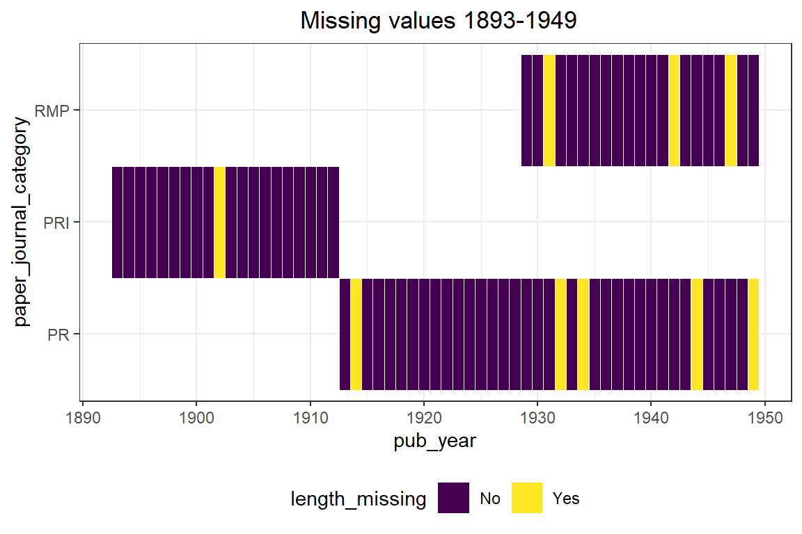
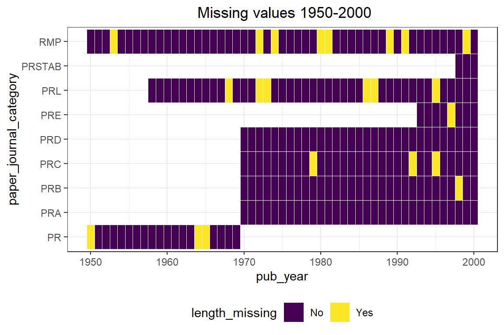
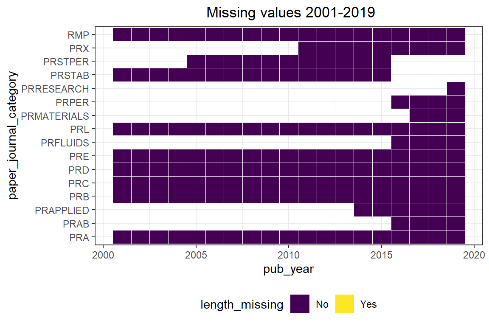

Chapter 4 Missing values
We read data from a transformed csv file as mentioned in the Data transformation section. The file contains the metadata about an article/paper (details are mentioned in the Data sources section). Here is a summary of the missing values per column.
## X paper_doi
## 0 0
## paper_journal_category paper_pub_date
## 0 0
## paper_length paper_authors
## 10861 0
## paper_authors_count paper_affiliations
## 0 0
## paper_title
## 0Meta data Columns and their description -
1. X - index of the column
2. paper_doi - DOI/ID of the paper
3. paper_journal_category - Type of physics review journal where the paper is published
4. paper_pub_date - Date of paper publication
5. paper_length - Number of pages
6. paper_authors - Authors of the paper
7. paper_authors_count - Number of authors of the paper
8. paper_affiliations - Affiliations of authors
9. paper_title - Title of the paper
The paper_length is measured in number of pages. We have a few of the papers as shown above for which we do not have this information. There are few others where the length is 0, and the number if shown below.
## n
## 1 15541A plot for the paper_length missing and paper_length 0 values are shown as below. As we have a lot of rows in our data set, we graph the missing values by dividing our data into 3 different time periods - 1893-1949, 1950-2000, and 2001 - 2019 as shown below.

One thing to note in all the graphs above - Not all categories of physics review journal papers came into effect at the same time. For instance, PRI papers were the earliest and got discontinued after 1912. PR and RMP paers came in later, and all other categories came to exist in subsequent years. Hence we see white gaps in our graphs. These are not missing data, but just that a category did not exist until a certain time.
We see that between 1893 - 1949, there is paper_length missing for a few PR, PRI, and RMP papers. PR and RMP journal categories start in the year 1913 and 1928 respectively. We have a few missing paper_length information between 1949-2000. But after 2000, we do not have any missing paper_length.
We do not delete these rows entirely from our data as there are other columns which we use for some of our visualizations. But we filter it out from our calculation when we look at the affect of just the length of paper on the number of citations received.
In the metadata csv we also have some papers that have author information missing, and some have authors but do not have their affiliations information. They appear in the dataframe as ‘[]’ and we count those to get a number of missing author information. There are 10440 such observations, which is approximately 1% of our total records.
## n
## 1 10440For author information dependent graphs, we exclude these records from our dataset for calculations.
Lastly, in our main data file that has pair-wise citations, we do not have any records missing as shown below.
## citing_doi cited_doi
## 0 0